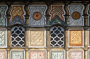
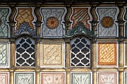

Disclaimer: These pages are not actively maintained, and some of the practical information on the site is out of date. I am working on a new version of the site that will focus more on my photos and memories of travel in Southeast Europe, and less on practical details that too easily become obsolete. In the meantime, please treat the information here with caution.
Republic of Macedonia :: Introduction
Macedonia is right at the heart of the Balkans, and most travellers to the region pass through it at some stage, yet it remains something of an unknown quantity where tourism is concerned. At an official level there seems to be little interest in attracting visitors, especially independent travellers; even Albania and Bosnia receive more coverage in the travel press than Macedonia. Those travellers who do visit find a welcoming and laid-back country, where change seems to happen at a slightly more measured pace than in other parts of the Balkans. The obvious place to start is Lake Ohrid, deservedly one of the most-loved destinations in the Balkans. Independent travellers who make time to explore the rest of the country are likely to find it equally rewarding.
Where to go: some suggestions

Lake Ohrid, tucked away in Macedonia's southwestern corner, is undoubtedly the country's top attraction. It offers to opportunity to mix a little history and culture with a lot of relaxation, all against a background of imposing mountains and shimmering water. The old town of Ohrid, with its array of churches and old-style houses, is the focus for the area, but there is much else to explore. You could easily spend a week or more visiting monasteries, boating on the lake, hiking in the empty expanses of Galičica National Park, or enjoying the quieter surroundings of Prespa Lake.
If you succeed in dragging yourself away from Ohrid, you won't have to travel very far to find other places of interest, whether you head east or north. Immediately to the east is the Pelagonia region. Among the sights here are glacial lakes in Pelister National Park, eclectic architecture in Bitola, elegant houses in the mountain town of Kruševo, and a 360 degree view from Markovi Kuli, near Prilep. Your most memorable experience in this region may be a hike through rugged countryside from Prilep to the spendidly isolated Treskavec Monastery.
Alternatively, head north from Ohrid to the Mavrovo region, ideally on the scenic back road through Struga and Debar. Here you'll find another national park, traditional villages such as Galičnik, and Sveti Jovan Bigorski Monastery, considered to be one of the most beautiful in Macedonia.
From either Pelagonia or Mavrovo you are well placed to head to Skopje. It must be admitted that Skopje is not of Europe's most popular capital cities among travellers, and it doesn't always make a good first impression. But once you look beyond the concrete, Skopje's bazaar area is one of the most interesting in the Balkans, and the city is an excellent base for excursions: hiking around Lake Matka, admiring the Byzantine art at Sveti Pantelejmon monastery, or visiting some of Macedonia's most impressive examples of Islamic architecture in nearby Tetovo.
If Macedonia as a whole is not exactly swamped by foreign tourists, Eastern Macedonia is even less visited. Although there are quite a few sights of interest, they are further apart than in the west, leading many travellers to overlook the region - I am guilty of this myself. Of the region's many monasteries, the largest and most visited (by Macedonians) is Sveti Joakim Osogovski. In a wooded valley near the otherwise unremarkable town of Kriva Palanka on the main Skopje-Sofia road, the monastery's 12-domed main church dates from the 19th century; the lively atmosphere is quite different from the crumbling mediaeval monasteries elsewhere in the country.
Practicalities
Transport
The domestic train system is limited and slow with infrequent services. The line most likely to be of interest to tourists runs from Skopje to Prilep and Bitola. You are more likely to make use of buses. The vehicles are often quite old, but as it's a small country and the road network is in pretty good shape, you shouldn't have to endure any discomfort for too long. The mountainous terrain means that most journeys have some interesting scenery along the way. Some routes are served by minibuses, which are often very crowded with limited luggage space. You'll also come across shared taxis: drivers wait outside bus stations for travellers heading to an adjacent town, for example from Bitola to Ohrid, and each passenger pays separately - the fare should not be much higher than a bus ticket for the same route. Regular taxis are generally excellent value and always worth considering for trips to out-of-the-way sights.
There are two international airports. Skopje Airport serves a more limited range of destinations than most European capitals, while Ohrid airport has an even smaller number of flights, mainly in summer. Cheap flights to Macedonia are not easy to find; it's worth considering flights to Sofia, Prishtina, or Thessaloniki followed by overland travel to Macedonia.
Overland connections are relatively straightforward. Most visitors are likely to pass through Skopje, which is located on one of Europe's key routes for north-south travel. Trains run to Greece (2 daily), Serbia (3 daily) and Kosovo (2 daily). There are plentiful buses to Bulgaria, Serbia, and Kosovo, but few to Greece. The best connections to Albania are from nearby Tetovo, although there are also buses from Skopje itself. See the Skopje page for more details.
Macedonia's visa requirements for certain countries are more restrictive than most of its neighbours, and not all nationalities can get visas on arrival. Australians and Canadians in particular should check the current situation with the relevant authorities - see links page. This is not an issue for EU travellers.
Language
Macedonian is a Slavic language closely related to Bulgarian, and also sharing quite a lot of vocabulary with Serbian. It is written using the Cyrillic alphabet, which I strongly advise learning if you intend travelling around the country independently. The Macedonian version of the alphabet has a few slight differences from the Serbian and Bulgarian versions (see The Cyrillic Alphabet in the Balkans). A significant minority of the population speaks Albania, which is written in the Latin alphabet - this is especially noticeable in the northwest of the country.
Money
The currency is the Macedonian Denar (MKD). After a few days in the country you may well find yourself with a wallet full of 10 Denar notes (worth too little to be useful for most purposes) and 1000 Denar notes (worth too much in many situations). Macedonia is a generally cheap country. Ohrid in particular has plentiful accommodation in both hotels and private rooms; these are very good value outside the height of summer. The exception is accommodation in Skopje, where the choice of budget and mid-range options is rather limited (but improving).
The Republic of Macedonia was admitted to the United Nations in 1993 as "The former Yugoslav Republic of Macedonia", or FYROM. This reflected Greek concerns over the use of the name Macedonia, which is also a province of Northern Greece. FYROM was explicitly stated to be a temporary description, but 15 years later the issue has not been resolved. The country is still listed in the UN's alphabetical list of member states under T for "The".
.
 
